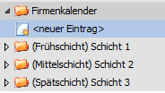

Nach Definition der Ressourcen ist zu erfassen, wann die Ressourcen zur Verfügung stehen. D.h. es ist zu definieren was die Betriebszeiten sind, ob in mehreren Schichten gearbeitet wird und an welchen Tagen auf Grund von Betriebsferien, Feiertagen, etc. nicht gearbeitet wird.
Diese Definition findet im Programmbereich
1 WinLine PPS
1 Stammdaten
1 Kalender
statt.
Grundsätzlich gilt folgende Organisation:
Ø Firmenkalender
Der Firmenkalender definiert den Rahmen innerhalb dessen Ressourcen (Mitarbeiter und Produktionsmittel) grundsätzlich zur Verfügung stehen.
Ø Schema (=Unterkalender)
Innerhalb des Firmenkalenders können Schemata definiert werden, die diese Zeit weiter eingrenzen. Ein klassisches Beispiel eines Schemas wäre eine Schicht in einem Mehrschichtbetrieb.
Für jedes Schema können Kernzeiten und Überstunden definiert werden.
Den Schemata werden am Ende Ressourcen zugeordnet.
Beispiel
Es werden drei Schichten gefahren. Jede Schicht ist dabei ein Schema. Die drei Schichten (=Schemata) ergeben den Firmenkalender.

Ø Abweichungen
Sollen alle Ressourcen eines Schemas für eine gewisse Zeit von der definierten Zeit abweichen, können diese Zeiten als Abweichungen definiert werden.
Beispiel
Die Auftragslage erfordert es, dass am Samstag eine Sonderschicht gefahren wird. Diese wird als Abweichung definiert. Zum Ausgleich gibt es am folgenden Freitag früher Feierabend. Auch dieses ist eine Abweichung.